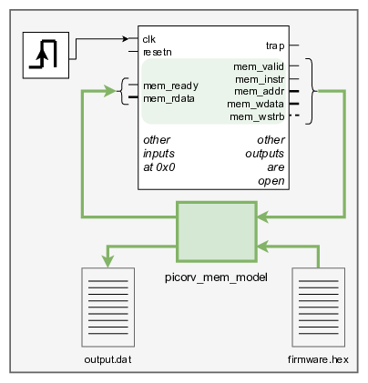
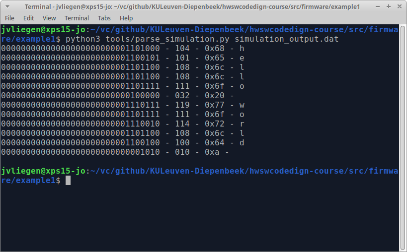

By now you should have a Vivado project that is able to simulate the PicoRV. Also, you should have a working setup that compiles C-code into a .hex file. It’s time to close this loop.
In the depicted testbench sits the PicoRV32 in the center. This device-under-test (DUT) is the unmodified code from the PicoRV32 repo.
As there currently is no implementation for the memory, the testbench instantiates a model (picorv_mem_model.vhd) that mimics the behaviour of such a memory implementation.
This approach is similar to how you modelled a clock source.
The picorv_mem_model has an additional input load_file. With this input set, the model reads in a file into it’s virtual memory.
In the previous section it was discussed how the result of a print function ended up in a write to address 0x10000000. This is also caught by this memory model. Every write to this address hence results in a write to file, e.g. simulation_output.dat.
Both the filenames of the input file and the output file are set through generics:
...
picorv_mem_model_inst00: component picorv_mem_model
generic map (
G_DATA_WIDTH => G_DATA_WIDTH,
FNAME_HEX => "/home/jvliegen/vc/github/KULeuven-Diepenbeek/hwswcodedign-course/src/firmware/example1/firmware.hex",
FNAME_OUT => "/home/jvliegen/vc/github/KULeuven-Diepenbeek/hwswcodedign-course/src/firmware/example1/simulation_output.dat"
) port map (
...
);
...Please note that the possibility of describing such models is an intrinsic part of the HDL. However, it is still important to understand that this type of code is non-synthesisable, as in … it can not be translated to hardware components.
A simple Python script is available to ‘parse’ the output that is generated by the memory model:
python3 tools/parse_simulation.py <simulation_output_filename>
This small script converts the 32-bit binary string to an integer and shows it both decimally and hexa-decimally. Also the corresponding character is printed.
Feel free to adjust/upgrade/improve/… this parsing script !!
